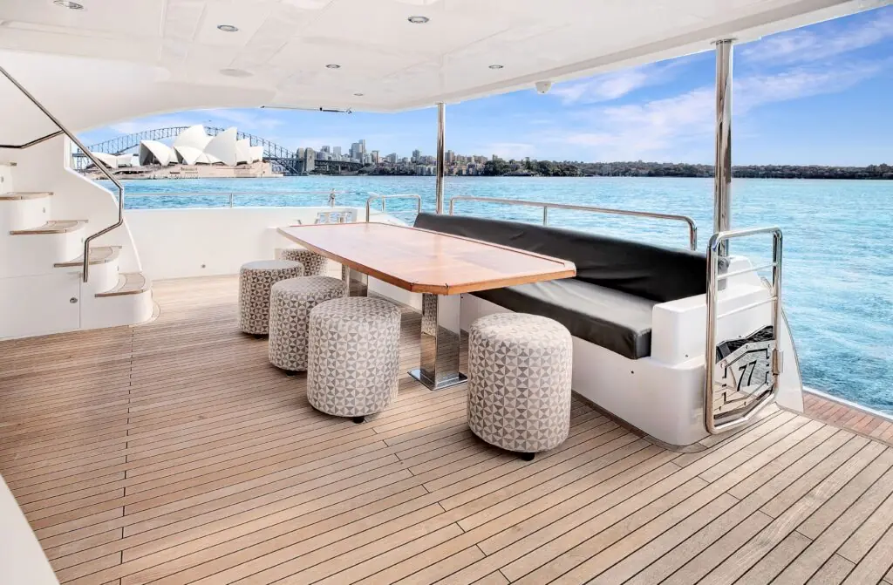
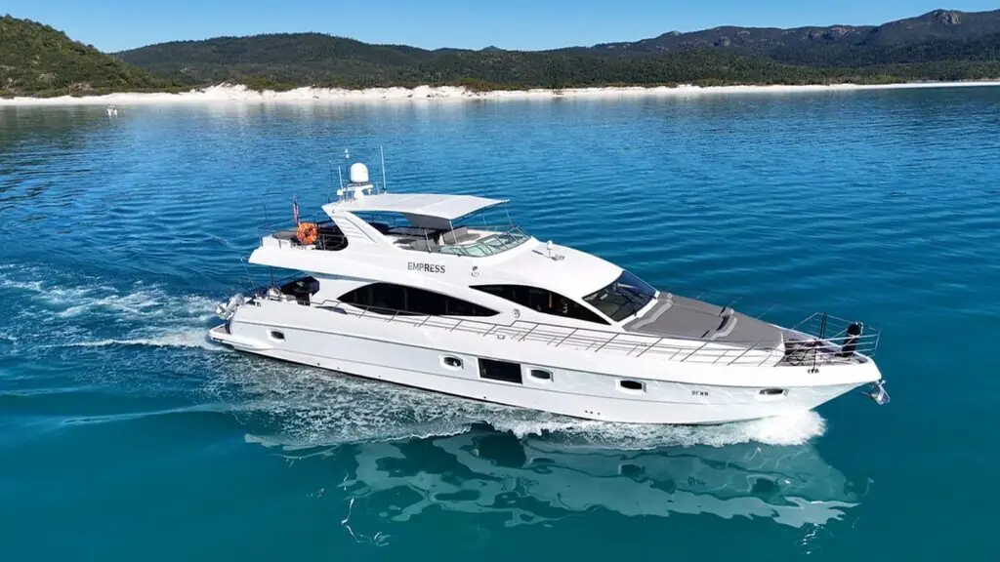
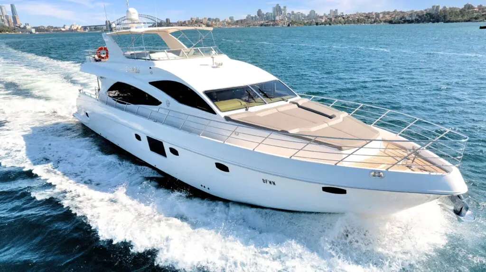
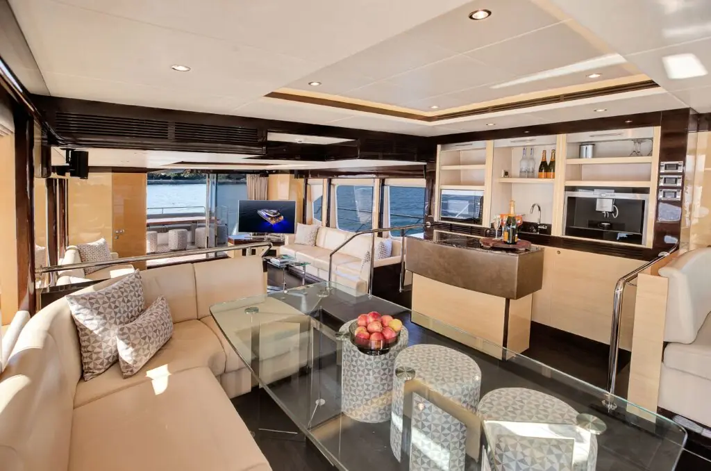
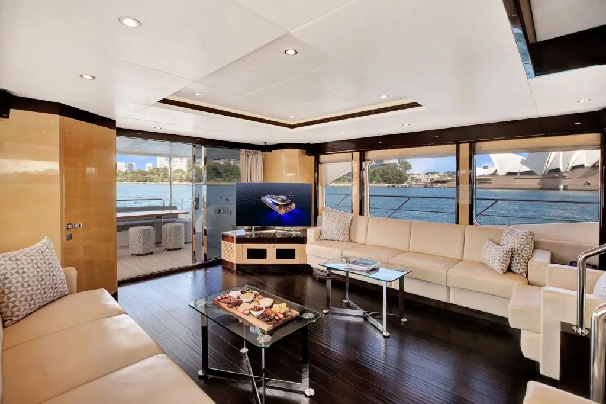
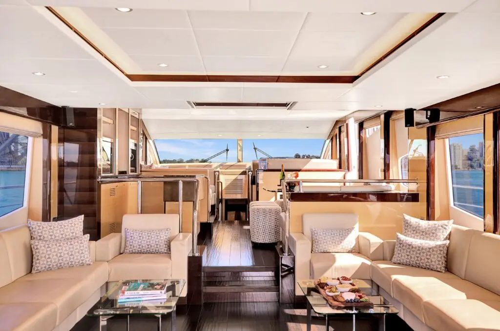
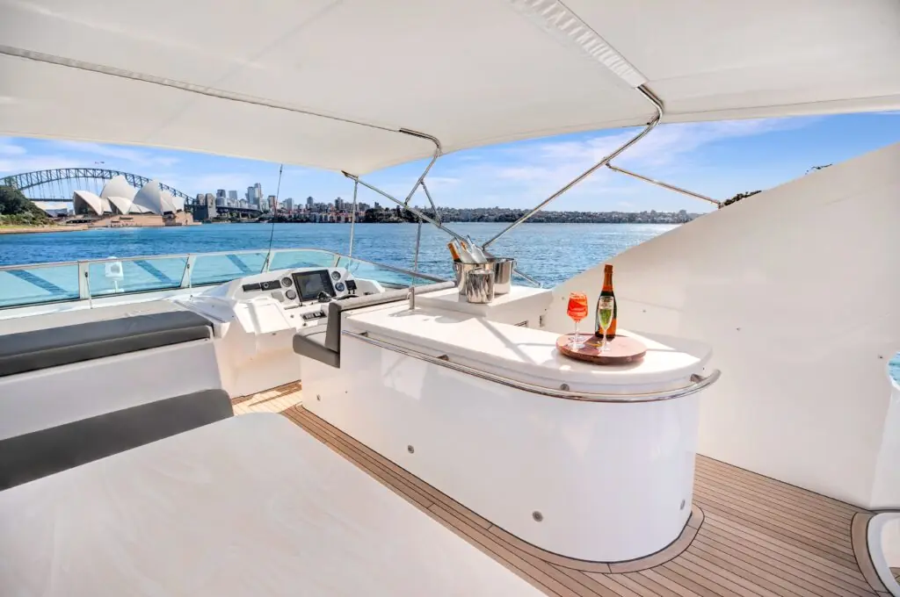
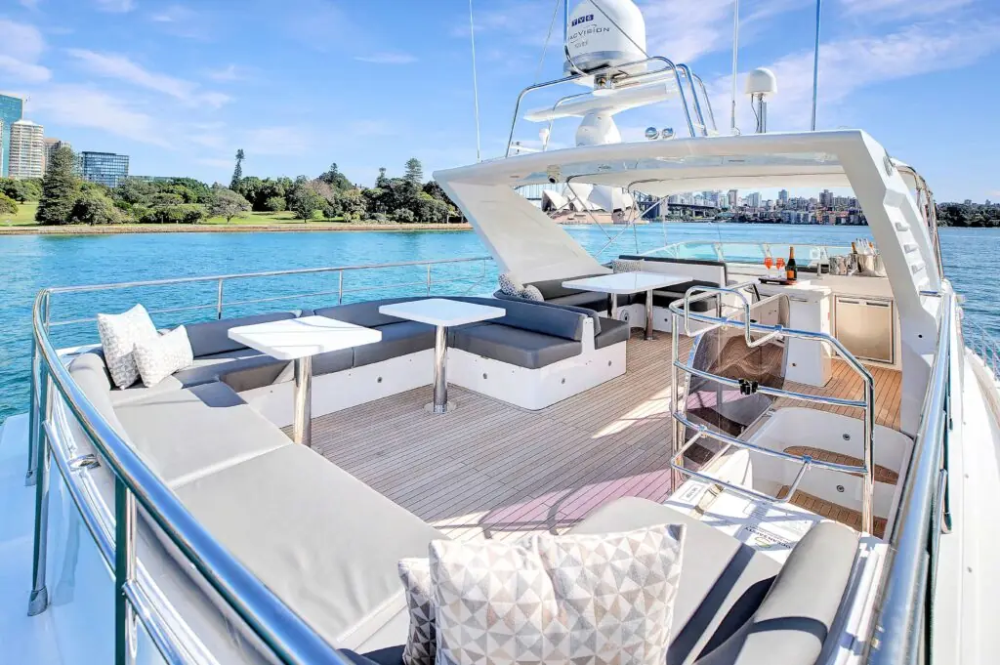
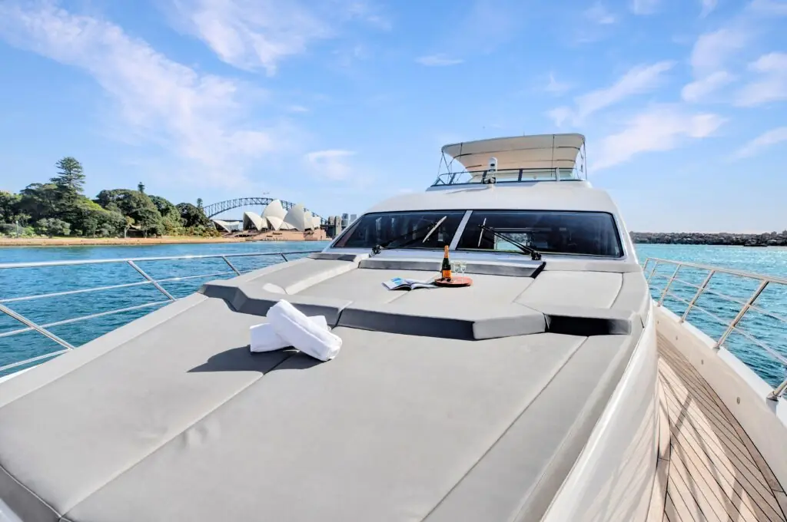
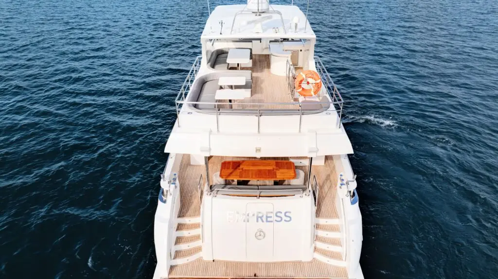
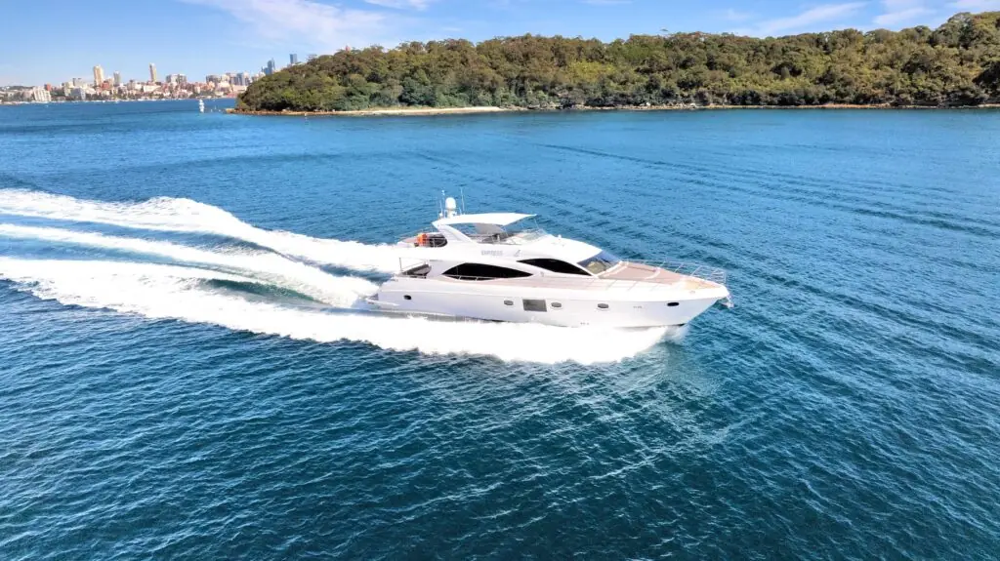
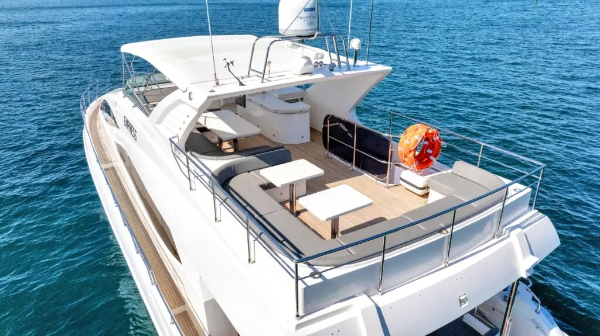
사진 12장 · 옆으로 넘기고, 누르면 크게 볼 수 있습니다
A
Empress
77ft Gulf Craft Majesty 모터요트
- 건조
- 2017년
- 길이
- 23.5m
- 정원
- 36명 → 4명
- 특징
- 가장 최신
좋은 점
- 세 척 중 가장 새 배, 실내외 마감이 가장 깔끔
- 후면 데크 원목 테이블에서 오페라하우스를 보며 식사
- 바람이 불면 넓은 실내 살롱으로
- 플라이브리지 라운지에서 야경
디너와 음료
- Noranise 카나페 + 4인 디그스테이션
- 샴페인 Moët & Chandon (Veuve Clicquot로 변경 가능)
- 와인·맥주·스피릿 포함, 논알콜 1인
비용 내역AUD $8,492
요트
요트 4시간 전세77ft 전용 · 캡틴·크루·연료 포함 · $1,550 × 4시간
$6,200디너 · 음료 · 서비스 $2,292
셰프 선상 디너Noranise 셰프 출장 · 탑승 카나페 + 디그스테이션 코스 · 4인
$1,500럭셔리 음료 패키지 × 3인Moët 샴페인, 화이트·로제·레드 와인 5종, 맥주, Grey Goose·Chivas 등 스피릿 · 4시간 무제한 · $120/인
$360논알콜 패키지 × 1인탄산음료·주스·탄산수 · 4시간 무제한
$32전담 서버 1명4시간 테이블 서비스
$300시내 선착장 이용료탑승·하선 2회
$100합계 · 4명 · 4시간요트, 셰프 디너, 음료, 서비스 모두 포함
$8,492